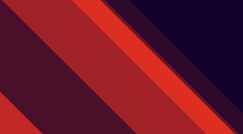

Filter
- We use filters on images to transform them.
- We can also use multiple filters simultaneously by separatin them with space -> filter: blur(10px) brightness(70%) hue-rotate(180deg);
- Original image :

- Some commonly used filters :
- filter: blur(5px);
- filter: brightness(50%);
(makes brightness half)
- filter: contrast(150%);
- filter: drop-shadow(-5px 5px 4px blue);
we can always use "box-shadow" for this.
- filter: grayscale(80%) ;
turns into black and white
- filter: hue-rotate(180deg);
rotates colors to specified degree in color wheel.
- filter: invert(100%) ;
- filter: opacity(20%);
- filter: saturate(60%);
- filter: opacity(70%);
gives a yellow brown appearence.
- filter: blur(10px) brightness(70%) hue-rotate(180deg);